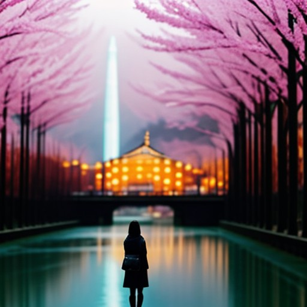
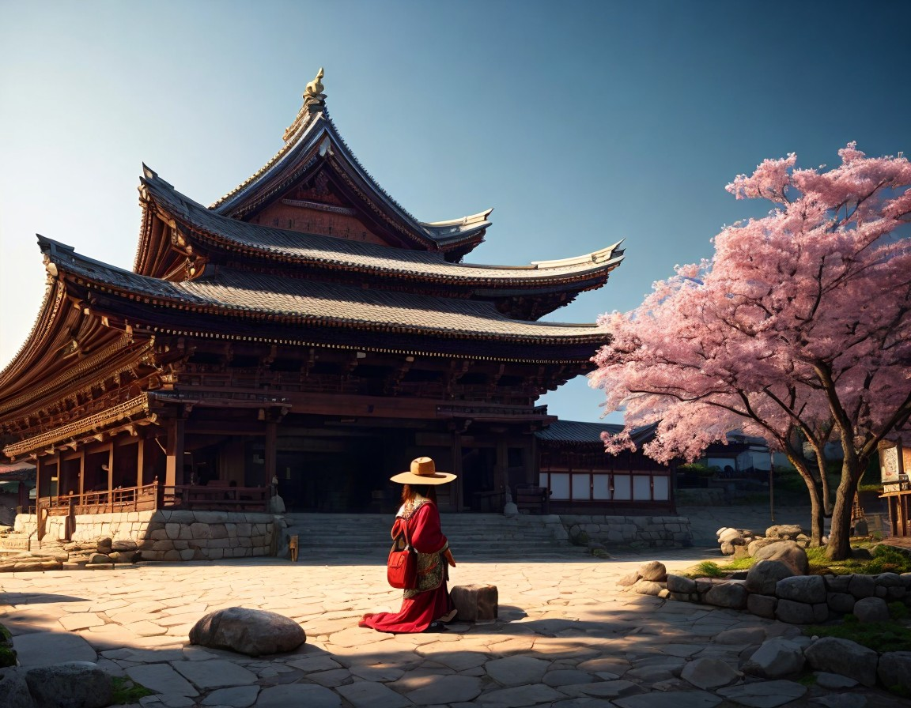
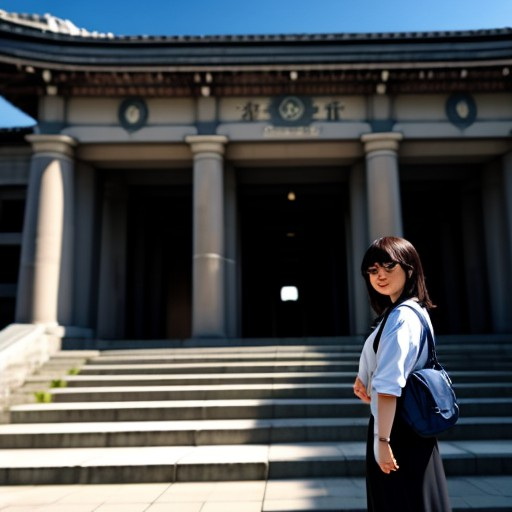
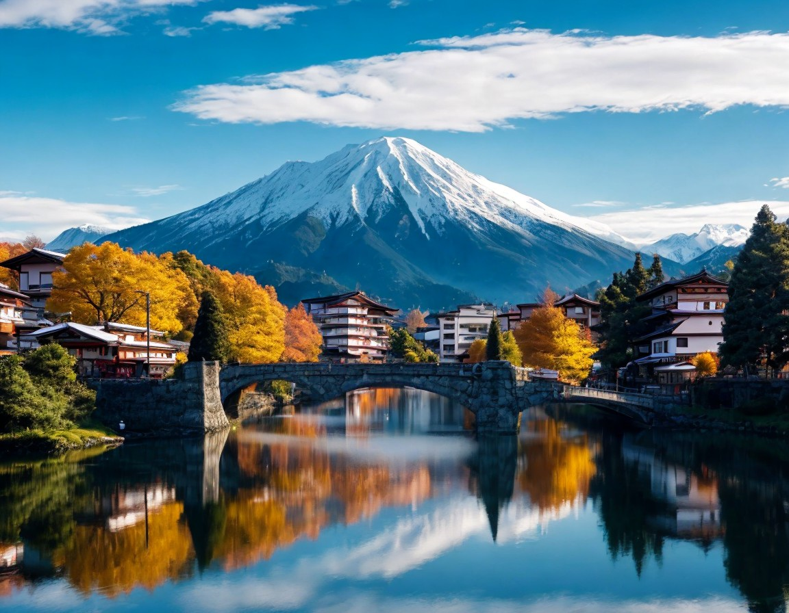

Tokio
La capital de Japón es una metrópolis vibrante llena de cultura, comida y entretenimiento. Algunos lugares destacados para visitar en Tokio incluyen:
- El cruce peatonal de Shibuya
- El templo Senso-ji en Asakusa
- El distrito de Shinjuku
- El Museo Ghibli en Mitaka

Kioto
Kioto es conocida por sus hermosos templos, jardines y tradiciones culturales. Algunos lugares destacados para visitar en Kioto incluyen:
- El Templo de Kinkaku-ji (Pabellón Dorado)
- El Templo de Fushimi Inari-taisha con sus miles de torii rojos
- El barrio de Gion, conocido por sus geishas
- El Bosque de Bambú de Arashiyama
Nara
Nara es una ciudad famosa por sus templos antiguos y por ser el hogar de cientos de ciervos que deambulan libremente por los parques. Lugares destacados para visitar en Nara incluyen:
- El Gran Buda en el Templo Todai-ji
- El Parque Nara, donde puedes alimentar a los ciervos
- El Santuario Kasuga-taisha con sus miles de linternas de piedra

Hiroshima y Miyajima
Hiroshima es conocida por su trágica historia y su reconstrucción posterior a la Segunda Guerra Mundial. Lugares destacados para visitar en Hiroshima y la cercana isla de Miyajima incluyen:
- El Parque Conmemorativo de la Paz de Hiroshima y el Museo de la Paz
- El Santuario de Itsukushima en Miyajima, conocido por su torii flotante
- El Monte Misen en Miyajima, que ofrece vistas espectaculares

Monte Fuji
El Monte Fuji es el pico más alto de Japón y un símbolo icónico del país. Puedes disfrutar de vistas impresionantes y actividades al aire libre en los alrededores del monte. Algunas opciones incluyen:
- Ascender al Monte Fuji durante la temporada de escalada (julio-agosto)
- Disfrutar de vistas panorámicas desde los lagos Kawaguchi, Yamanaka o Saiko
- Explorar los senderos para caminatas y los pueblos pintorescos en la región de los Cinco Lagos
